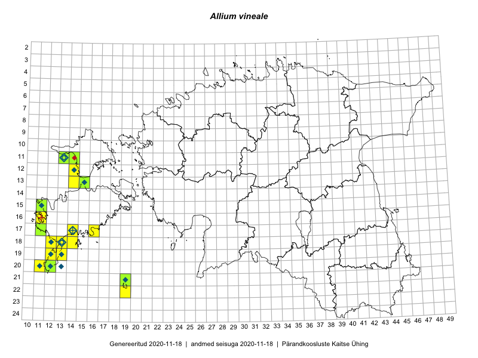

Allium vineale — nurmlauk
Kaardile koondatud taksonid: Allium vineale L. (43)

Kaart põhineb 43 kirjel, neist:
vaatlusi 33
eksemplare 10
Kaasaegsed1 leiukohad asuvad 17 ruudus.
Andmed “Eesti taimede levikuatlasest”,2 sulgudes ruutude arv:3
● 1971–2005 (13)
○ 1921–1970 (0)
△ kuni 1920 (1)
+ hävinud (0)
? kaheldav (0)
Lisaruudud teistest andmebaasidest:4
ELF: 2006– . . . (0)
PKÜ: 2006– . . . (9)
ELF: 1971–2005 (0)
PKÜ: 1997–2005 (8)
| Ruut | Vaatleja(d) | Vaatlusaeg | Kirje PlutoFis |
|---|---|---|---|
| 13-14 | Toomas Kukk, Eerik Leibak | 2015-08-10 | ruut/ala: Allium vineale L. |
| 13-15 | Toomas Kukk, Eerik Leibak | 2015-08-10 | ruut/ala: Allium vineale L. |
| 19-13 | Oliver Parrest | 2015-07-01 | ruut/ala: Allium vineale L. |
| 20-11 | Mari Reitalu, Triin Reitalu | 2014-08-15 | ruut/ala: Allium vineale L. |
| 18-12 | Mari Reitalu, Sirje Azarov, Oliver Parrest | 2015-08-02 | ruut/ala: Allium vineale L. |
| 17-16 | Sirje Azarov, Aira Alasi | 2015-08-17 | ruut/ala: Allium vineale L. |
| 17-14 | Toomas Kukk, Meeli Mesipuu, Johannes Kõdar | 2016-08-11 | ruut/ala: Allium vineale L. |
| 12-14 | Toomas Kukk, Meeli Mesipuu | 2016-08-10 | ruut/ala: Allium vineale L. |
| 21-19 | Meeli Mesipuu, Ott Luuk | 2016-09-10 | ruut/ala: Allium vineale L. |
| 22-19 | Ott Luuk, Meeli Mesipuu | 2016-09-10 | ruut/ala: Allium vineale L. |
| 18-14 | Mari Reitalu | 2008-09-04 | ruut/ala: Allium vineale L. |
| 20-12 | Mari Reitalu | 2007-05-10 | ruut/ala: Allium vineale L. |
| 15-11 | Mari Reitalu | 2012-07-26 | ruut/ala: Allium vineale L. |
| 11-13 | Toomas Kukk, Indrek Tammekänd | 2017-09-12 | ruut/ala: Allium vineale L. |
| 13-14 | Toomas Kukk, Eerik Leibak | 2015-08-10 | punkt: Allium vineale L. |
| 13-15 | Toomas Kukk, Eerik Leibak | 2015-08-10 | punkt: Allium vineale L. |
| 13-15 | Toomas Kukk, Eerik Leibak | 2015-08-10 | punkt: Allium vineale L. |
| 13-15 | Toomas Kukk, Eerik Leibak | 2015-08-10 | punkt: Allium vineale L. |
| 17-16 | Sirje Azarov, Aira Alasi | 2015-08-17 | punkt: Allium vineale L. |
| 20-12 | Oliver Parrest | 2015-08-15 | punkt: Allium vineale L. |
| 18-12 | Oliver Parrest, Mari Reitalu, Sirje Azarov | 2015-08-02 | punkt: Allium vineale L. |
| 21-19 | Ott Luuk, Meeli Mesipuu | 2016-09-10 | punkt: Allium vineale L. |
| 21-19 | Ott Luuk, Meeli Mesipuu | 2016-09-10 | punkt: Allium vineale L. |
| 22-19 | Meeli Mesipuu, Ott Luuk | 2016-09-11 | punkt: Allium vineale L. |
| 17-14 | Meeli Mesipuu, Toomas Kukk, Johannes Kõdar | 2016-08-11 | punkt: Allium vineale L. |
| 18-14 | Mari Reitalu | 2008-08-04 | punkt: Allium vineale L. |
| 15-11 | Mari Reitalu | 2012-07-26 | punkt: Allium vineale L. |
| 11-13 | Toomas Kukk, Indrek Tammekänd | 2017-09-12 | punkt: Allium vineale L. |
| 11-13 | Rein Kalamees | 2017-08-08 | ruut/ala: Allium vineale L. |
| 18-13 | Rein Kalamees | 2017-07-21 | punkt: Allium vineale L. |
| 15-11 | Mari Reitalu | 2007-06-07 | punkt: Allium vineale L. |
| 15-11 | Mari Reitalu, Triin Reitalu | 2019-06-20 | punkt: Allium vineale L. |
| 16-11 | Rein Kalamees | 2019-07-30 | punkt: Allium vineale L. |
| 20-12 | Jana-Maria Habicht | 2013-08-02 | TAM0121217: Allium vineale L. |
| 20-12 | Jana-Maria Habicht | 2013-08-02 | TAM0121218: Allium vineale L. |
| 20-12 | Jana-Maria Habicht | 2013-08-02 | TAM0121985: Allium vineale L. |
| 13-15 | Peedu Saar, Maret Gerz | 2016-08-11 | TAA0134051: Allium vineale L. |
| 11-14 | Peedu Saar, Thea Kull | 2016-08-09 | TAA0134052: Allium vineale L. |
| 13-15 | Toomas Kukk, Eerik Leibak | 2015-08-10 | TAA0135514: Allium vineale L. |
| 13-15 | Toomas Kukk, Eerik Leibak | 2015-08-10 | TAA0135517: Allium vineale L. |
| 11-13 | Toomas Kukk | 2012-08-14 | TAA0112449: Allium vineale L. |
| 15-11 | Ott Luuk | 2012-07-15 | TAA0112564: Allium vineale L. |
| 21-19 | Ott Luuk, Meeli Mesipuu | 2016-09-10 | TAA0147336: Allium vineale L. |
Kaasaegsed leiukohad (tähistatud värvitud ruutudega) põhinevad peamiselt 2014–2019 välitööandmetel. Väiksemal määral on andmebaasi kantud vanemaid leiuandmeid aastatest 2006–2013.↩︎
Kukk, T., Kull, T., Eesti taimede levikuatlas. Eesti Maaülikool, Põllumajandus- ja Keskkonnainstituut, Tartu, 2005.↩︎
NB! 2005. aasta atlase andmestikus katavad uuemad leiud vanemaid. Näiteks kui liik on ruudus registreeritud 1971–2005, siis pole võimalik öelda, kas ta oli sellest ruudust teada ka enne 1970. aastat. Vana atlase andmetel hävinud ja kaheldavaid leiukohti pole hilisemate (taas)leidude põhjal korrigeeritud.↩︎
Eestimaa Looduse Fondi (ELF) ja Pärandkoosluste Kaitse Ühingu (PKÜ) andmebaasid sisaldavad inventeeritud koosluste kirjeldusi ja liigiloendeid. Neist andmekogudest on kaardile lisatud lisatud vaid need ruudud, millest uue atlase andmekogus taksoni kohta kirjeid veel pole. Kõrvale on jäetud teadaolevalt kaheldavad määrangud. Kaartidel katavad uuema perioodi andmed vanemaid, PKÜ omad ELFi omi. Kattumise tõttu võib kaardil näha olla vähem mingi kategooria ruute kui legendis olev arv näitab. ELFi ja PKÜ andmed ei kajastu hetkel vaatluste tabelis ega ruutude liigiloendites.↩︎